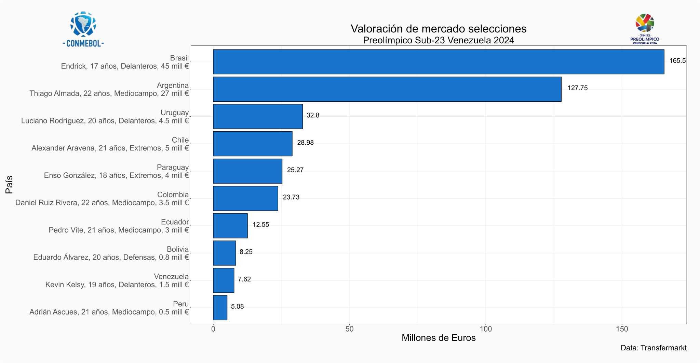
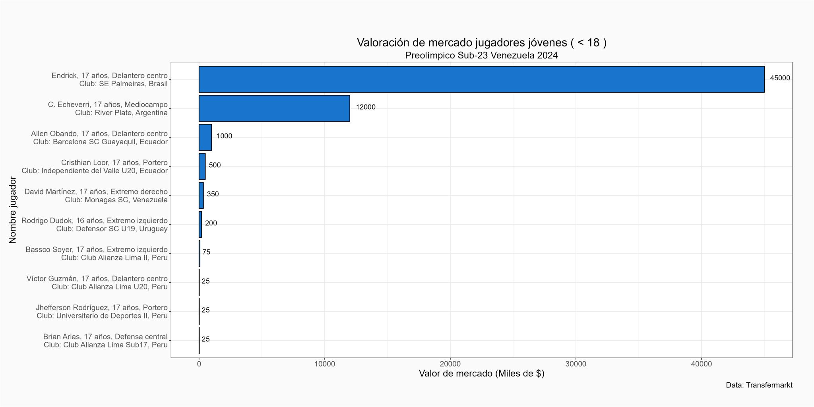

El #Preolímpico Venezuela 2024 ⚽ contará con la presencia de jugadores bien valorados dentro del mercado y que ya han firmado contratos con clubes europeos.
💡 Brasil y Argentina son las selecciones mejor valoradas según la data de Transfermarkt, con 165.5 y 127.75 millones de Euros respectivamente.
💡Por su parte Venezuela y Perú se encuentran en el otro extremo, con selecciones valoradas en 7.62 y 5.08 millones de Euros respectivamente.
En el torneo se podrá ver el rendimiento de jugadores menores a 18 años, entre ellos destacan,
🔎 Endrick, cuenta con 17 años, es el delantero mejor valorado del torneo con unos 45 millones de Euros.
🔎 De cerca le sigue Claudio “el diablito” Echeverri con 17 años, este medicampista ofensivo tiene un valor de mercado de 12 millones de Euros.
🔎 En el tercer lugar se ubica Allen Obando de Ecuador, con 17 años se valora en 1 millon de Euros.
🔎 David Martínez con 17 años se ubica en la 5 posición, está valorado en 350 mil Euros.
🔎 El resto del top 10 lo ocupa Rodrigo Dudok de 16 años y 4 jugadores de la selección de Perú.